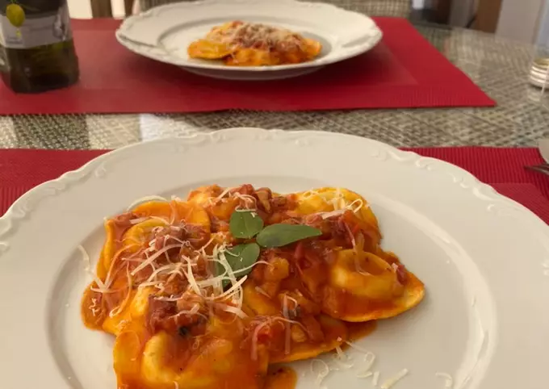

Ravioli 4 Formaggi all'Amatriciana
Ravioli 4 Formaggi all'Amatriciana
By Luis Quesada
Sobre o prato
Deliciosa receita italiana à base de molho de tomate e bacon.
Ingredientes:
Rende 4 porções
- 300 g bacon
- 2 dentes alho
- 3 tomates italianos
- 1 lata de tomate
- 1/4 xícara vinho branco
A gosto
- Pimenta calabresa
- Pimenta-do-reino
- Azeite de oliva
- Sal
- Parmesão para ralar
Passo a passo
- Corte o bacon em tiras, a cebola em cubos pequenos e os tomates em cubos.
- Em uma panela wok, frite o bacon na própria gordura em fogo baixo até
toda a gordura derreter.
- Adicione a cebola e frite até ficar dourada, adicionando o alho amassado
antes de dourar completamente.
- Adicione a pimenta-do-reino e a pimenta calabresa a gosto.
- Adicione o vinho branco e deglace a panela, misturando bem.
- Quando todo o álcool evaporar, adicione o tomate e a lata de tomate.
- Amasse bem os tomates pelati para não ficar nenhum pedaço grande.
- Deixe fervendo até cozinhar bem os tomates.
- Adicione sal a gosto.
- Adicione a massa ao dente na panela e misture ao molho.
- Coloque em um prato, rale parmesão ralado em cima e adicione um fio de
azeite de oliva.
- Sirva.
Buon appetito!!!